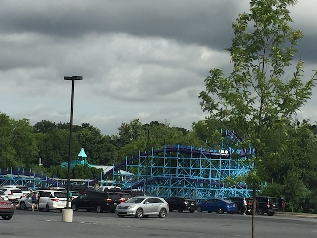

| |
Kingdom Coaster Review

Today at Dutch Wonderland, we'll be reviewing Kingdom Coaster. This is the park's family wooden coaster and one of the star attractions at Dutch Wonderland. Yeah. This is a kiddy park. And Kingdom Coaster is sort of a kiddy woodie. Not quite a kiddy coaster. But....very similar to those other kiddy woodies, only this is slightly bigger. So yeah. Hop in the cars, pull down the restraints (this ride has the exact same trains as any other CCI Woodie), and we're off! We head around a turn and through some straight track. OK. I know this is a kiddy woodie, but even I think this is tame. OK. We then turn and head up the lifthill. We go up it pretty quickly since...it's not very big. Get a decent view of the freeway and the surrounding area of the Amish Country. Dip down, go around a turn, and FIRST DROP!!! OK. It's pretty small. But hey. Family woodie. We've got some speed. We then go through a slight turn before heading up another small hill. Hmm. For a kiddy coaster, this is actually pretty good (though whether or not this is a kiddy coaster is a seperate debate). There actually is a tiny pop of airtime here. Normally, this doesn't mean anything, but....because it's so small and essentially a kiddy coaster, it catches you off guard and impresses us. Dip down, before heading through another curve. Only....it's not just a turnaround. It's a downward helix. Not bad. Reach the ground and "TAKE THE TUNNEL!!!!". It's very quick, but still cool. Head up a small little hill. Hmm. Some very mild airtime here. Not bad. Pop up again and go through another turn. Laterals too? Impressive. Pop back down again. Bounce through another tiny hill, before we head into an upward helix. Nothing crazy. But a couple more laterals and a fun way to lose a little speed. And then we glide right into the brake run. So yeah. I know you're at Dutch Wonderland for credit whoring, and this is a kiddy woodie. But this is honestly better than what I was expecting. As long as you're reasonable about what the ride should be, it's a really fun little coaster. A perfect fit for Dutch Wonderland.
6/10
Location: Dutch Wonderland
Opened: 1992
Built by: Custom Coasters International
Last Ridden: June 26, 2021
Kingdom Coasters Photos



Home
|